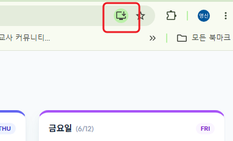

1단계
1 / 4 단계
4단계: 나만의 주소로 배포 및 결제 설정하기
완성된 학급일지를 인터넷에 배포하여 나만의 고유한 사이트 주소를 만들고 배포를 완료합니다.
💳 배포를 위한 결제 등록 정보 및 요금 안심 가이드 (필독)
- 최초 1회만 연동: 결제 계정 카드 등록은 최초 1회만 해두면 향후 다른 AI 앱 배포 시 번거로운 과정 없이 편리하게 사용할 수 있습니다.
- 무료 요금 한도 적용: 개인 학급 운영 등 소규모 프로토타입 범위 내에서는 구글 클라우드가 매월 제공하는 기본 무료량(Gemini 1.5 Flash 기준 15 RPM / 1,500 RPD) 내에 충분히 머물기 때문에 요금이 실질적으로 청구되지 않아 전혀 걱정하지 않으셔도 좋습니다.
- 카드 등록을 하지 않고 사용하는 법 (우회책): 신용카드 정보 등록이 어렵거나 꺼려지신다면, 배포(Publish) 절차를 생략하고 AI Studio 우측의 [Preview] 테스트 화면을 전체화면으로 넓혀서 즉석에서 학급 관리에 그대로 활용하셔도 무방합니다.
💡 주소창 우측에 다운로드(설치) 아이콘이 안 보일 때 우회 설치법
웹 통신 규격에 따라 크롬 주소창에 다운로드(PWA) 아이콘이 나타나지 않을 수 있습니다. 이때는 크롬 브라우저 우측 상단 **[점 3개 메뉴(⋮)] -> [저장 및 공유] -> [바로가기 만들기]**를 클릭하신 뒤, **[창으로 열기] 옵션을 꼭 체크**하고 만들기를 누르면 바탕화면에 동일하게 설치 형태로 사용하실 수 있습니다.
4-1
배포 시작하기
AI Studio 우측 상단의 Publish를 클릭합니다.

4-2
배포 마법사 시작
배포 안내 팝업창에서 Get started를 누릅니다.

4-3
구글 클라우드 프로젝트 세팅
프로젝트 확인 창에서 기본값인 Default Gemini Project를 둔 상태에서 하단의 Set up billing을 클릭합니다.

4-4
고객 정보 및 신용카드 연동
화면 안내에 맞춰 본인 정보와 결제용 카드 등록을 1회 진행합니다.

4-5
최종 배포 완료 및 고유 웹링크 획득
최종적으로 [나만의 학급일지 is published!] 화면이 나타나면 배포가 성공한 것입니다. 상단의 Visit을 클릭하여 나만의 고유 웹 일지 주소로 입장하고 웹 주소는 즐겨찾기(Ctrl+D)해둡니다.

4-6
바탕화면에 바로가기 다운로드 설치
접속한 나만의 사이트 주소창 우측 상단의 [앱 설치(다운로드)] 아이콘을 클릭하여 바탕화면에 나만의 앱으로 설치해 두고 손쉽게 더블클릭으로 재접속해 사용합니다.
